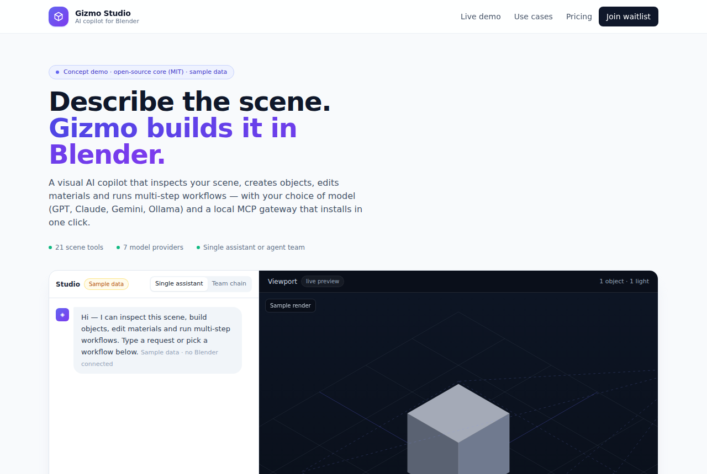

mcp-for-blender-pro: Chat with AI inside Blender
bookwjitchieni1986/blender-ai-mcp-addon · AI appsMIT⭐ 2,061

What it is: mcp-for-blender-pro (repo: bookwjitchieni1986/blender-ai-mcp-addon) is a Blender extension that puts a chat-based AI assistant inside Blender. It can inspect your scene, add and move objects, assign materials, take viewport screenshots, look up the bpy API, and run multi-step agent workflows. It ships with a built-in MCP server, so other clients can drive Blender over an authenticated local endpoint.
Why it's taking off: The demo is obvious in five seconds — ask for a product-display scene and watch cubes, lights, and a camera appear. The README lists 21 scene tools, support for OpenAI, Claude, Gemini, OpenRouter, Ollama and custom endpoints, plus a "team chain" of manager/worker/reviewer agents. That combination of visual feedback and real scene manipulation is what has pulled ~2,000 stars in a day, per repo metrics.
Where the product opportunity is: Installation is still the hard part. The release targets Windows x64 and Blender 4.2+, and users must bring their own API keys. A paid desktop wrapper with a guided installer, bundled model credits, and a template library (product shots, archviz walkthroughs, game-ready props) could sell to small studios and technical artists. The agent-team feature also points to paid collaboration tiers.
Caveats: Windows-only for now; the name is close to official MCP-for-Blender projects; and the execute_code tool runs Python without a true sandbox, so prompt-injection risk is real.
Today's top 5
| # | Repo | Buzz | Startup | Overall |
|---|---|---|---|---|
| 1 | bookwjitchieni1986/blender-ai-mcp-addon | 7.67 | 7.15 | 7.65 |
| 2 | danielwh2/sprite-stacking | 7.33 | 7.05 | 7.45 |
| 3 | HKUDS/CLI-Anything | 6.67 | 6.1 | 6.47 |
| 4 | R0Y00/Xbox2Windows | 7.67 | 5.7 | 6.35 |
| 5 | huami1314/GestaltX | 8.33 | 4.65 | 6.34 |